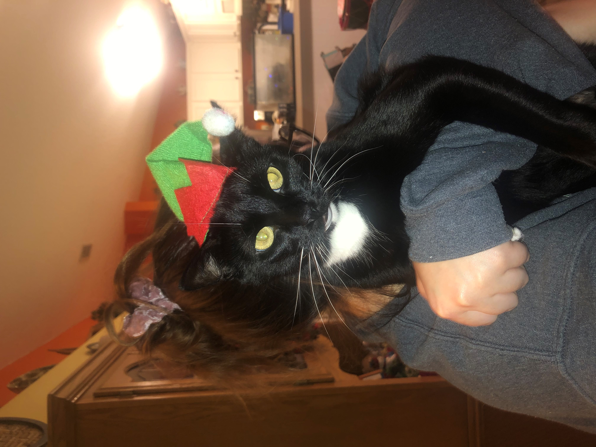
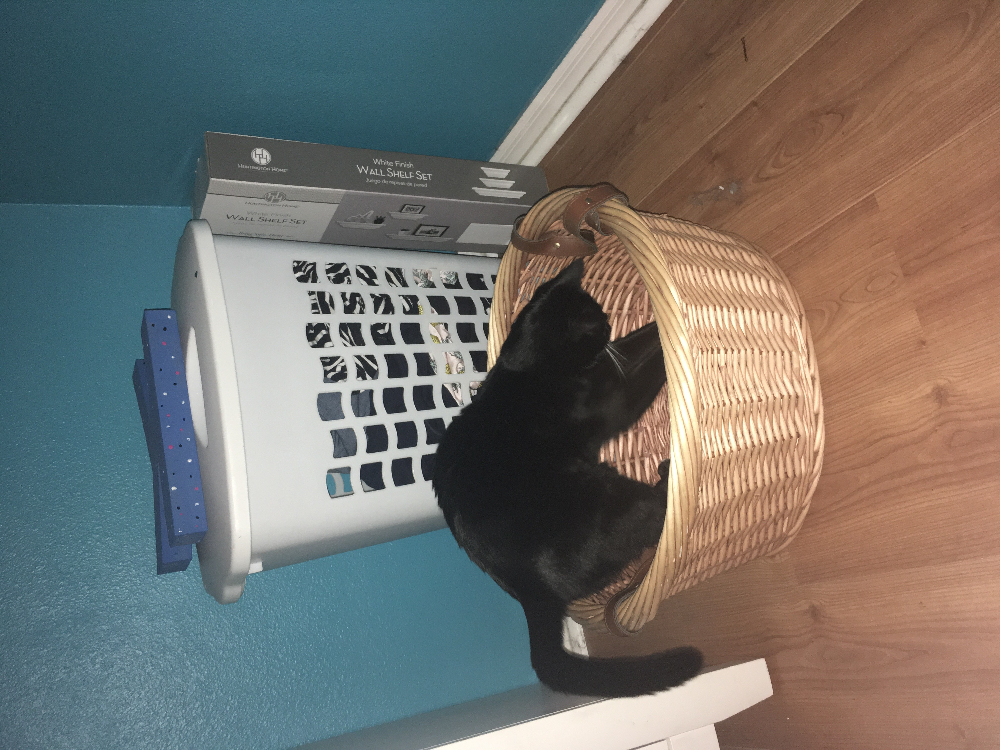

Last Wednesday was the most Wednesday that ever Wednesday-ed. I woke up on that Wednesday and realized my bed was gone! I suspected my cat must have stolen it. My cat loves human stuff so I assumed they must have stole it to add to their collection. After naming my cat, "Cat", Cat had a tendency to act human. The first occurance of my cat stealing my things was during Christmas. Cat had stolen my elf hat and determined it was their's. Below is evidence of Cat red handed.
Other occurance of this happening was the Wednesday before last Wednesday. I found Cat destorying a basket in my room. I told Cat that their collection of human stuff was under the basket so it makes sense that Cat was digging through the basket to find their collection. Once again the evidence is below.
For more of Cats adventures "click here!"